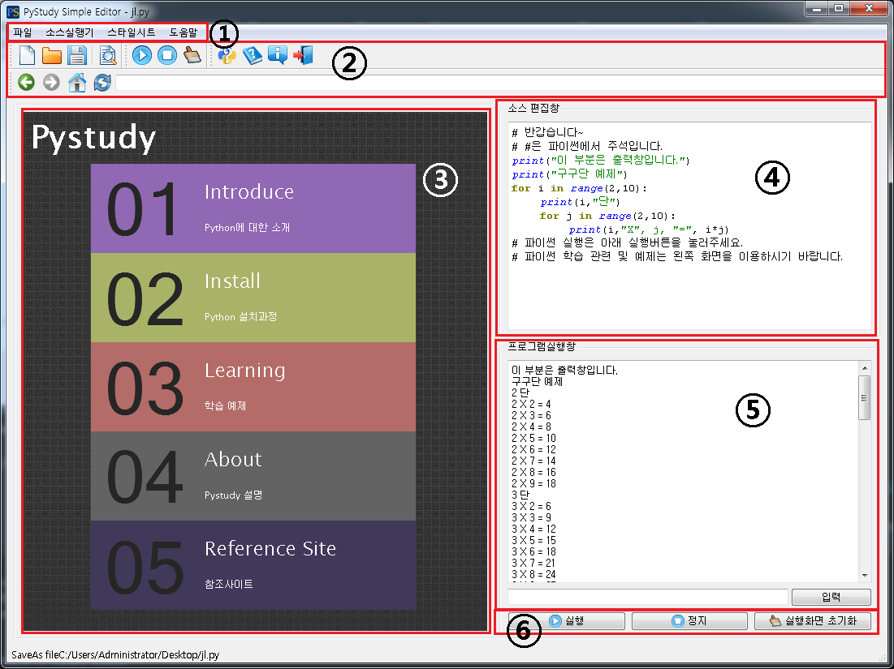

Pystudy 설명서
1. 학습창
1.
파일 : 새 소스파일을 열거나 저장할수 있고 홈버튼과 예제파일 오픈 기능이 있습니다.소스실행기 : 6번과 같은 기능을 하며 4번에 입력한 코드를 실행, 정지와 프로그램 실행창(5)의 내용을 지울수 있습니다.
스타일시트 : 학습창의 배경색을 바꿀수 있습니다.
도움말 : 파이썬 함수에 대한 도움말과 이 프로그램의 도움말, 제작자를 볼수 있습니다.
2.
새 소스파일 : 새로운 소스 파일을 열수 있습니다.소스파일 열기 : 컴퓨터에 저장되있는 소스파일을 불러옵니다.
소스파일 저장 : 소스파일을 저장할수 있습니다.
예제파일 열기 : 컴퓨터에 저장되있는 예제파일을 불러옵니다.
실행 : 소스편집창(4)의 코드를 실행합니다.
정지 : 실행시킨 코드를 정지합니다.
실행화면 초기화 : 프로그램실행창(5)의 내용을 지웁니다.
파이썬 도움말 : 파이썬에서 사용되는 기본적인 함수에 대한 간단한 설명을 보여줍니다.
Help : 프로그램에 대한 설명서를 보여줍니다.
about python : 프로그램의 로고와 제작자를 보여줍니다.
창닫기 : 학습창을 종료합니다.
Go Back : 브라우저를 한단계 뒤로 이동합니다.
Go Forward : 브라우저를 한단계 앞으로 이동합니다.
학습홈 바로가기 : 첫화면으로 이동합니다.
Reload : 새로고침
링크 : 기존 브라우저처럼 입력할수 있습니다.
3.
인터넷을 띄우거나 학습자료, 소스파일, 예제파일들을 띄워서 볼수 있습니다.4.
Python코드를 입력할 수 있습니다. 복사/붙여넣기가 가능합니다.5.
소스 편집창(4)의 실행 결과를 여기서 확인할 수있습니다. Input은 아래 입력에서 입력할 수 있습니다.6.
소스 편집창(4)의 코드를 실행시키거나 정지시킬수 있습니다. 실행화면 초기화는 프로그램실행창(5)의 내용을 지워줍니다.2. 콘솔창

1. 이 화면은 2에서 입력한것들을 보여주는 로그 역할을 합니다. 그외에도 잘못입력했을때 올바른 입력방법을 보여줍니다.
2. 명령어를 입력할수 있습니다. 명령어들은 /로 시작합니다.